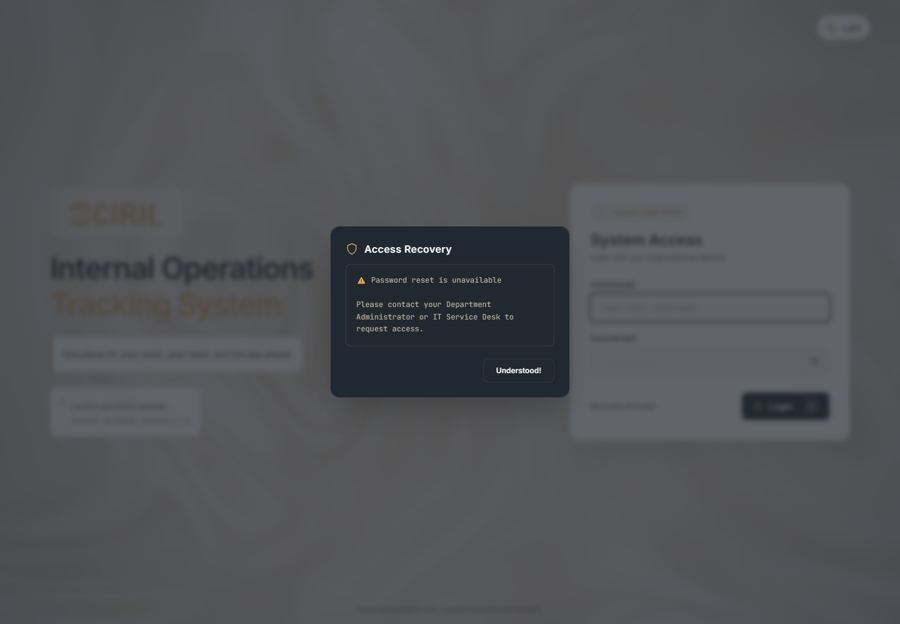

CIRIL · Internal operationsAuthentication review · DraftAuthentication
review
![CIRIL]()
Bugs, causes and a practical resolution plan.
A diagnosis-first review of the authentication built so far: credentials, location permissions, punch-in evidence, sessions, role workspaces, punch-out and shared themes.
20 October 2026 · Current working tree
12 findings: 2 high, 9 medium, 1 low.
Three findings have runtime observations. Nine are confirmed code-path or test-contract findings whose failure scenarios still need focused reproduction.
Read-only audit · No application fixes applied
Prepared using four Bug Hunt Swarm investigation roles and Impeccable’s Read-mode design principles. This draft is not a certification of production security.
CIRIL · Internal operationsAuthentication review · DraftWhat to address first
The leading integrity risk is stale authentication state. The leading shared-availability risk is the proxy-wide login counter.
Make state changes atomic — AUTH-02Backend stage checks and updates are separated by awaits. Old requests can overwrite new state. Define one authoritative transition protocol before adding more authentication steps.
Isolate login failure budgets — AUTH-01The proxy collapses browser identities into a shared IP bucket. One employee’s mistakes should not temporarily lock out the whole office.
Make asynchronous UI recoverable — AUTH-03 to AUTH-06Permission changes, expiration and lost responses must invalidate or reconcile the current attempt. Animation should reflect validated state, never determine it.
What was observed directly
- Twenty password verifications blocked a zero-delay timer for a measured 843 ms.
- Blocking the Tailwind CDN produced “tailwind is not defined” and changed login input geometry.
- Recovery allowed Tab to reach obscured login controls; Escape did not close it.
What is already sound in the reviewed paths
Parameterized SQL, hashed session tokens, HttpOnly/SameSite cookies, role checks, owner-scoped photo delivery, image decoding and checkout duplicate protection are present. WebP extension/encoder contracts are consistent. These observations are not a claim that every edge case is secure.
CIRIL · Internal operationsAuthentication review · DraftThe flow under review
The authentication boundary and the attendance evidence boundary overlap. Keeping their state explicit is the common fix across several findings.
Punch-in
Location permissionFresh browser reading opens credentials
→Credentials verifiedPending session, five-minute window
→Location assessed50 m radius; exception decision if needed
Camera captureRequired JPEG submission
→Evidence committedWebP + MySQL metadata
→Active workspaceAssigned role; eight-hour cookie lifetime
Punch-out
Log out selectedActive session retained during capture
→Fresh location + photoOff-site/unknown needs confirmation
→Commit and revokeLinked checkout record; delete session
Trust and persistence
Browser-supplied facts
Coordinates, GPS accuracy, claimed capture time and image bytes originate in the client. Permission UI is a workflow control; it is not proof of physical presence.
Server-enforced facts
Credentials, assigned role, stage eligibility, ownership, receipt time, file encoding and record linkage can be enforced independently by the server.
Required invariant: only the current valid attempt may advance a stage. Permission loss, expiry, cancellation and a changed session must invalidate old continuations.
Finding register
Use the IDs to connect each finding to its cause, proof limit, recommendation and acceptance check on the following pages.
| ID | Finding | Severity | Evidence |
|---|
| AUTH-01 | One employee can trigger a shared login lockout | High | Source |
| AUTH-02 | Sign-in transitions use stale state snapshots | High | Source |
| AUTH-03 | A late checkout response can override location revocation | Medium | Source |
| AUTH-04 | Success animation can outlive revoked location permission | Medium | Source |
| AUTH-05 | Expired punch-in capture stays on an unusable photo screen | Medium | Source |
| AUTH-06 | A lost successful upload response leaves punch-in stranded | Medium | Source |
| AUTH-07 | Punch-in accepts a claimed capture before validation | Medium | Source |
| AUTH-08 | Password verification blocks the whole API event loop | Medium | Observed |
| AUTH-09 | A blocked styling CDN breaks the login layout | Medium | Observed |
| AUTH-10 | Visual modal overlays do not behave as keyboard dialogs | Medium | Observed |
| AUTH-11 | Reduced motion does not stop the moving shader | Medium | Source |
| AUTH-12 | The title test can pass without different punch titles | Low | Source |
High: shared availability or session/evidence integrity. Medium: a concrete blocked flow, recovery, accessibility or verification issue. Low: a regression-test blind spot. Documented product limits are listed separately and are excluded from these totals.
CIRIL · Internal operationsAuthentication review · DraftOne employee can trigger a shared login lockout
HighAUTH-01Availability / credentials· Source-confirmed
The rate limiter groups every browser behind the Vite proxy into the same IP bucket. Ten failures from one employee can temporarily reject correct credentials for everyone using that proxy.
Trigger and expected boundary
- Use two browsers through the documented Vite entry point.
- Accumulate ten failures in browser A; attempt valid credentials in browser B before the minute ends.
What causes it
The key is req.ip. Vite forwards /api to loopback, and Express has no deliberate trusted-client identity design. A successful login deletes this shared counter, also resetting the budget for unrelated accounts.
Why it matters
Cross-account denial of sign-in. Before the limit is reached, successful credentials from one account can reset the shared guessing budget. Once blocked, success cannot clear it because the limit is checked first.
Recommended resolution
Use independent per-account and trusted-client counters, plus an aggregate abuse limit. Configure only the actual trusted ingress; do not blindly trust arbitrary X-Forwarded-For headers. Success must not reset unrelated counters.
Acceptance check
Use an isolated two-client test. A failure budget for one account must not block another account; a successful login must not erase a different account’s failures.
Source evidence
iots-app/backend/index.js:31–39
iots-app/backend/index.js:56
iots-app/frontend/vite.config.js:19–20
31 const key = req.ip;
32 let count = attempts.get(key);
33 if (!count || count.until < Date.now()) { count = { failures: 0, until: Date.no...
34 if (count.failures >= 10) return res.status(429).json({ message: 'Too many atte...
35 const [[employee]] = await pool.execute('SELECT * FROM employees WHERE username...
36 if (!employee || !verify(password, employee.password_hash)) {Evidence assessment (high code-path confidence). The routing/key path is confirmed. A live two-browser lockout was deliberately not induced against the current database. Excerpts shorten long lines with “...”; the referenced source is authoritative.
CIRIL · Internal operationsAuthentication review · DraftSign-in transitions use stale state snapshots
HighAUTH-02Session / evidence integrity· Source-confirmed
Location, confirmation and cancellation check an earlier session snapshot, then write by token without requiring the expected current stage. Concurrent requests can overwrite a later transition.
Trigger and expected boundary
- Admit two location requests while the session is pending, then delay one write.
- Advance the other request through photo activation; release the delayed location write. A similar interleaving applies to an already-admitted cancellation.
What causes it
Middleware loads req.session before the handler awaits database work. The subsequent UPDATE or DELETE does not compare the stored stage. Photo activation has a conditional transition; the preceding operations do not share that protection.
Why it matters
A session can be downgraded after activation or terminated by stale cancellation. The location shown later can diverge from the saved photo snapshot. A unique existing photo can make recovery impossible in that session.
Recommended resolution
Use a transaction with a locked session/state row, or compare-and-swap predicates with affected-row checks. Version each location attempt and bind confirmation to that version. Include cancellation in the same state-transition protocol.
Acceptance check
Coordinate request barriers against an isolated DB or fake pool. After activation, an old location/confirm/cancel request must fail without changing stage, evidence or session existence.
Source evidence
iots-app/backend/index.js:62–64
iots-app/backend/index.js:68–94
iots-app/backend/index.js:109–114
68 if (req.session.stage !== 'pending') return res.status(409).json({ message: 'Th...
69 const p = req.body?.position;
70 if (!p || ![p.latitude, p.longitude, p.accuracy, p.timestamp].every(Number.isFi...
71 const location = assessLocation(req.body?.position);
72 const stage = location.status === 'onsite' ? 'awaiting_photo' : 'awaiting_confi...
73 await pool.execute('UPDATE session_locations SET stage=?,location_json=? WHERE ...
74 await pool.execute('INSERT INTO login_events (employee_id,event,details) VALUES...Evidence assessment (high code-path confidence). The missing predicates are confirmed. The race frequency and exact HTTP result require a controlled interleaving test; no live race was induced. Excerpts shorten long lines with “...”; the referenced source is authoritative.
CIRIL · Internal operationsAuthentication review · DraftA late checkout response can override location revocation
MediumAUTH-03Checkout / permissions· Source-confirmed
Revoking location clears checkout state, but a delayed confirmation can still enter the photo phase. Capturing then renders a summary that dereferences a null location.
Trigger and expected boundary
- Reach an off-site checkout decision and select Continue checkout.
- Revoke location while the confirmation response is delayed, then release a successful response and capture a photo.
What causes it
The revocation callback sets location to null and phase to location. confirm() later sets phase to photo unconditionally. The live ref only detects unmounting; it does not distinguish old attempts from current permission state.
Why it matters
The camera phase can reopen after revocation, followed by a render exception at location.latitude or location.status. A late location-check response can also reopen capture, even where it restores a non-null location.
Recommended resolution
Invalidate the attempt generation on revocation and cancellation. Ignore stale responses after every await and require a current permission plus a validated non-null location before entering photo capture. Abort requests where practical.
Acceptance check
In an isolated UI harness, delay confirmation, revoke permission, then resolve it. The location gate must remain mounted; capture and upload must stay unavailable.
Source evidence
iots-app/frontend/src/auth/checkout/CheckoutFlow.jsx:18–33
iots-app/frontend/src/auth/checkout/CheckoutFlow.jsx:46–50
iots-app/frontend/src/auth/PhotoEvidence.jsx:94
46 async function confirm() {
47 setBusy(true); setError('');
48 try { await authApi('checkout/confirm', { proceed: true }); setPhase('photo'); }
49 catch (failure) { if (failure.status === 401) onSessionEnded(); else { setErr...
50 finally { if (live.current) setBusy(false); }Evidence assessment (high code-path confidence). The response ordering and null dereference are source-confirmed. A permission-race browser reproduction was not performed on the live app. Excerpts shorten long lines with “...”; the referenced source is authoritative.
CIRIL · Internal operationsAuthentication review · DraftSuccess animation can outlive revoked location permission
MediumAUTH-04Sign-in / asynchronous UI· Source-confirmed
The final sign-in transition checks location permission once, then continues through asynchronous delays and animation. Revocation during that interval does not stop the final dashboard callback.
Trigger and expected boundary
- Complete punch-in photo submission successfully.
- Revoke location during the two 650 ms delays or final 320 ms animation.
What causes it
openWorkspace() checks locationAccess at entry, but only checks mounted before calling onAuthenticated. The revocation handler clears the gate without invalidating the in-flight success continuation.
Why it matters
The UI can enter the workspace after the user revoked a required permission. Important: /auth/cancel rejects an already-active session with 409, so this sequence does not by itself prove an invalid session or server authorization bypass.
Recommended resolution
Tie animation continuations to the same attempt generation as network requests. Invalidate and cancel them on permission loss, then recheck permission immediately before onAuthenticated. Define how to handle evidence already committed.
Acceptance check
Resolve photo success in a UI harness, revoke permission during the success delay, and assert that onAuthenticated is not called. Cover normal and reduced-motion timing.
Source evidence
iots-app/frontend/src/App.jsx:46–50
iots-app/frontend/src/App.jsx:89–99
iots-app/backend/index.js:91–95
89 async function openWorkspace(user) {
90 if (!locationAccess.current) throw new Error('Location permission is required...
91 setProcessStep(4); setPhase('processing');
92 await pause(650);
93 setProcessStep(5); setPhase('success');
94 await pause(650);Evidence assessment (high code-path confidence). The asynchronous continuation is confirmed in source. The narrow timing window has not been exercised against real browser permission controls. Excerpts shorten long lines with “...”; the referenced source is authoritative.
CIRIL · Internal operationsAuthentication review · DraftExpired punch-in capture stays on an unusable photo screen
MediumAUTH-05Sign-in / expiration recovery· Source-confirmed
Pending sign-in sessions expire after five minutes. The shared photo component can handle a 401 through a callback, but the sign-in caller does not provide that callback.
Trigger and expected boundary
- Verify credentials and location, then spend more than five minutes on the camera stage.
- Capture and submit; retake and submit again.
What causes it
PhotoEvidence has onSessionEnded handling for checkout. The sign-in instance passes onSaved and onCancel only, so a session-expired response becomes a text error without leaving photo capture.
Why it matters
Repeated uploads continue to fail because retaking a photo does not renew authentication. Cancel or page reload can recover, but the photo screen does not guide the user back to credentials.
Recommended resolution
Provide an explicit sign-in expiration callback. Clear sensitive/photo/attempt state, return to credentials with an expiration explanation and restore useful keyboard focus. Do not silently renew an expired session.
Acceptance check
Return 401 from the sign-in photo endpoint in an isolated UI test. Assert that the photo view unmounts, the camera stops and the credentials screen explains that sign-in expired.
Source evidence
iots-app/backend/index.js:62–63
iots-app/frontend/src/App.jsx:163
iots-app/frontend/src/auth/PhotoEvidence.jsx:74–79
74 const response = await fetch(mode === 'checkout' ? '/api/auth/checkout/phot...
75 const result = await response.json();
76 if (response.status === 401 && onSessionEnded) { onSessionEnded(); return; }
77 if (!response.ok) throw new Error(result.message || 'The photo could not be...
78 if (active.current) await onSaved(mode === 'checkout' ? result : result.user);
79 } catch (failure) { if (active.current) setError(failure.message); }
80 finally { if (active.current) setUploading(false); }Evidence assessment (high code-path confidence). No five-minute live waiting test was run. The server expiry condition and missing callback are confirmed directly in source. Excerpts shorten long lines with “...”; the referenced source is authoritative.
CIRIL · Internal operationsAuthentication review · DraftA lost successful upload response leaves punch-in stranded
MediumAUTH-06Sign-in / network recovery· Source-confirmed
If the server commits a punch-in but its success response is lost, the client treats the upload as failed and remains at photo capture. Retrying conflicts with the server’s already-active session.
Trigger and expected boundary
- Allow a punch-in upload to commit, then drop its response before the client receives the success body.
- Try Use photo again, Retake, or Cancel sign-in without reloading.
What causes it
The server activates and records evidence before responding. The client only handles the immediate fetch result; it neither reconciles with /auth/me after an ambiguous failure nor sends an idempotent capture identifier.
Why it matters
The photo retry receives 409 because the session is active; cancellation also receives 409. The user can be stuck in the login interface while already authenticated. Reload is a workaround.
Recommended resolution
Reconcile ambiguous upload outcomes through the authenticated session/evidence state. Alternatively use a capture idempotency key so an accepted retry returns the original result. Distinguish “not accepted” from “accepted but response unknown.”
Acceptance check
In a separate harness, commit the upload and drop only its response. A retry or reconciliation must converge on the existing workspace without a second evidence record.
Source evidence
iots-app/backend/index.js:109–124
iots-app/backend/index.js:91–95
iots-app/frontend/src/auth/PhotoEvidence.jsx:70–80
74 const response = await fetch(mode === 'checkout' ? '/api/auth/checkout/phot...
75 const result = await response.json();
76 if (response.status === 401 && onSessionEnded) { onSessionEnded(); return; }
77 if (!response.ok) throw new Error(result.message || 'The photo could not be...
78 if (active.current) await onSaved(mode === 'checkout' ? result : result.user);
79 } catch (failure) { if (active.current) setError(failure.message); }
80 finally { if (active.current) setUploading(false); }Evidence assessment (high code-path confidence). This is a source-confirmed recovery gap with a specific network-failure condition. No live response was interrupted and no evidence was created for this audit. Excerpts shorten long lines with “...”; the referenced source is authoritative.
CIRIL · Internal operationsAuthentication review · DraftPunch-in accepts a claimed capture before validation
MediumAUTH-07Evidence / chronological integrity· Source-confirmed
Punch-in validates only that X-Captured-At is within two minutes of now. It does not require the claimed capture time to follow credentials and location validation.
Trigger and expected boundary
- Complete credentials and location checks in an isolated test.
- Submit a valid JPEG with a claimed capture timestamp 30 seconds before those checks, but still within the two-minute freshness window.
What causes it
The photo route checks recency but does not compare capture time with a server-side validated-stage timestamp. Checkout already performs an ordering check against checked_at; sign-in does not.
Why it matters
The system can accept an evidence record whose own timestamp contradicts the required sequence. This finding concerns chronological validation, not proof that browser-supplied timestamps establish camera provenance.
Recommended resolution
Persist a server-side location/capture challenge time and enforce capture ordering consistently. Keep server receipt time distinct from claimed client capture time, and account deliberately for limited client clock skew.
Acceptance check
Reject a timestamp before the validated stage while accepting an in-window timestamp after it. Apply equivalent rules to punch-in and punch-out.
Source evidence
iots-app/backend/index.js:97–105
iots-app/backend/checkout/routes.js:46–53
98 if (req.session.stage !== 'awaiting_photo') return res.status(409).json({ messa...
99 const capturedAt = Number(req.headers['x-captured-at']);
100 if (!Number.isFinite(capturedAt) || Math.abs(Date.now() - capturedAt) > 120000)...
101 let buffer;
102 try { buffer = await preparePhoto(req.body); }
103 catch { return res.status(400).json({ message: 'The photo could not be read. Pl...
104 const employee = await userData(req.session.employee_id, req.session.active_role);
105 const details = photoDetails(capturedAt, req.session.location_json);Evidence assessment (high code-path confidence). The missing comparison is confirmed in source; the proposed stale-capture request was not submitted to the live database. Excerpts shorten long lines with “...”; the referenced source is authoritative.
CIRIL · Internal operationsAuthentication review · DraftPassword verification blocks the whole API event loop
MediumAUTH-08Performance / credentials· Runtime observed
Password verification calls synchronous scrypt inside the login handler. While it runs, the same Node process cannot service other event-loop work.
Trigger and expected boundary
- Schedule a zero-delay timer in an isolated Node process using the existing password module.
- Generate one in-memory hash and perform 20 verifies consecutively; inspect elapsed time and timer state.
What causes it
passwords.js uses scryptSync for verify(), and the asynchronous Express handler calls verify directly. Declaring the route async does not make that synchronous computation non-blocking.
Why it matters
The measured batch took 843 ms, and the zero-delay timer had not fired at the end. Concurrent credential bursts can delay session reads, location and checkout operations. This was a local measurement, not an i3 benchmark.
Recommended resolution
Use asynchronous crypto.scrypt with bounded work concurrency and retain the constant-time comparison. Combine this with correctly scoped abuse limits so the worker pool is not overwhelmed.
Acceptance check
Run a concurrent authentication/read benchmark on an isolated service. Session and checkout latency should remain responsive while verification is queued.
Source evidence
iots-app/backend/passwords.js:1–11
iots-app/backend/index.js:35–36
6 exports.verify = (password, stored) => {
7 const [salt, key] = stored.split(':');
8 const actual = scryptSync(password, salt, 64);
9 const expected = Buffer.from(key, 'hex');
10 return actual.length === expected.length && timingSafeEqual(actual, expected);
11 };Evidence assessment (high code-path confidence). The event-loop stall was reproduced without DB access. End-to-end load and physical low-end hardware measurements remain outstanding. Excerpts shorten long lines with “...”; the referenced source is authoritative.
CIRIL · Internal operationsAuthentication review · DraftA blocked styling CDN breaks the login layout
MediumAUTH-09Availability / frontend delivery· Runtime observed
The authentication entry point depends on a blocking external Tailwind runtime. When that URL is blocked, the page raises an error and utility styling is unavailable.
Trigger and expected boundary
- Block https://cdn.tailwindcss.com in a fresh browser context.
- Load the normal local login page and allow the non-mutating initial location reading.
What causes it
index.html downloads cdn.tailwindcss.com and immediately assigns tailwind.config. Tailwind is not compiled into the local build, so serving the project locally does not remove this external dependency.
Why it matters
The browser reported “tailwind is not defined.” At the same 1440 px viewport, the username input width changed from 382 px to 177 px. Utility-based layout, responsive and dark variants lose their expected styling.
Recommended resolution
Compile a pinned Tailwind version and existing brand tokens into bundled CSS. Preserve the current palette, layout and requested animations; eliminate the runtime CDN/config dependency.
Acceptance check
With external CDN access blocked, load the built page and assert no page errors and equivalent login/gate geometry in both themes and mobile/desktop sizes.
Source evidence
iots-app/frontend/index.html:12–17
iots-app/frontend/package.json:1–25
13 <script src="https://cdn.tailwindcss.com"></script>
14 <script>
15 tailwind.config = {
16 darkMode: 'class',
17 theme: {Evidence assessment (high code-path confidence). The blocked-CDN failure was reproduced in Edge. A production deployment and office network configuration were not audited. Excerpts shorten long lines with “...”; the referenced source is authoritative.
CIRIL · Internal operationsAuthentication review · DraftVisual modal overlays do not behave as keyboard dialogs
MediumAUTH-10Accessibility / account recovery· Runtime observed
Recovery and empty-credential overlays are generic divs without modal semantics or protected focus. The recovery overlay was verified to leave keyboard access on obscured controls.
Trigger and expected boundary
- Open Recovery Process from the login page.
- Press Tab repeatedly and then Escape; inspect the focus target and accessible dialog role.
What causes it
The overlays lack a dialog primitive, accessible modal/title relationship, initial focus placement, focus containment and Escape handling. Empty-credential close code restores focus, but that does not provide modal behavior while open.
Why it matters
Observed: zero dialog roles; focus remained on Recovery Process after opening. Tab reached the obscured Login button, then later the theme button and username field. Escape left Access Recovery visible.
Recommended resolution
Use native dialog.showModal() or an accessible dialog primitive with labelled title/description, deliberate initial focus, Escape handling and opener focus restoration. Keep the existing visual identity.
Acceptance check
Test Tab and Shift+Tab containment, Escape, close-button focus return and screen-reader announcement for both overlays. No credentials need to be submitted.
Source evidence
iots-app/frontend/src/components/modals/HelpModal.jsx:8–35
iots-app/frontend/src/components/modals/EmptyCredsModal.jsx:8–42
8 <div className="fixed inset-0 z-50 flex items-center justify-center bg-brand-...
9 <div className="bg-brand-dark/95 dark:bg-brand-black/95 backdrop-blur-xl ro...
10 <div className="flex items-center space-x-2.5 mb-3 text-brand-smoke">
11 <span className="text-brand-gold">
12 <ShieldIcon />
13 </span>
14 <h3 className="text-base font-semibold tracking-wide">Access Recovery</h3>
Evidence assessment (high code-path confidence). Recovery keyboard behavior was reproduced. Empty-credentials semantics are source-confirmed; a full screen-reader run is still needed. Excerpts shorten long lines with “...”; the referenced source is authoritative.
CIRIL · Internal operationsAuthentication review · DraftReduced motion does not stop the moving shader
MediumAUTH-11Accessibility / low-end rendering· Source-confirmed
The restored WebGL background continuously advances time and requests frames even when the user enables reduced motion. The CSS preference rule cannot stop that JavaScript loop.
Trigger and expected boundary
- Enable the operating system or browser reduced-motion preference.
- Open the login page; the render loop still updates u_time and schedules requestAnimationFrame unconditionally.
What causes it
The shader render function has no matchMedia check or visibility gate. Existing reduced-motion CSS disables selected CSS effects, but it does not control the canvas animation.
Why it matters
Users who requested reduced motion still receive moving background material and continuous GPU work. The actual hardware cost was not measured in this audit.
Recommended resolution
Keep the requested normal animation. For reduced-motion users, render a static frame and respond only to resize/theme changes. Pause animation while hidden; add an optional measured low-power strategy without changing the normal design.
Acceptance check
In an isolated rendering test, enable reduced motion and assert that shader time stops advancing after the initial frame. Repeat theme/resize and hidden-tab checks.
Source evidence
iots-app/frontend/src/components/SimplexNoiseBackground.jsx:170–179
iots-app/frontend/src/index.css:102–111
174 gl.uniform2f(resLoc, canvas.width, canvas.height);
175 gl.uniform1f(timeLoc, elapsed);
176 gl.uniform1f(darkLoc, darkCurrentRef.current);
177
178 gl.drawArrays(gl.TRIANGLES, 0, 6);
179 animationFrameId = requestAnimationFrame(render);
Evidence assessment (high code-path confidence). The unconditional loop is confirmed in source. No frame instrumentation, GPU trace or physical low-end hardware test was added or run. Excerpts shorten long lines with “...”; the referenced source is authoritative.
CIRIL · Internal operationsAuthentication review · DraftThe title test can pass without different punch titles
LowAUTH-12Test coverage / evidence labels· Source-confirmed
The punch-out test compares its image buffer against a punch-in buffer made with a different employee name. The comparison does not isolate the title-kind behavior.
Trigger and expected boundary
- Imagine removing the checkout-kind branch from the title renderer.
- The two fixtures still contain different names, so the buffer inequality can remain true.
What causes it
assert.notDeepEqual is applied to images whose employee fields already differ. A regression that renders the same title for both kinds can still produce different buffers and pass.
Why it matters
The suite can report success while missing a regression in the user-requested Punch-in/Punch-out labels. This is a confirmed test weakness, not evidence that current image titles are wrong.
Recommended resolution
Use the identical source image, employee and details for both fixtures, varying only kind. Add a semantic title assertion in the stamp builder and a rendered review/golden that checks both titles.
Acceptance check
Deliberately replace the checkout title with the punch-in title in an isolated test fixture; the regression test must fail. Do not modify the live renderer to prove this audit finding.
Source evidence
iots-app/backend/test-photos.js:20–30
iots-app/backend/photos.js:42
26 const compact = await stampPhoto(await sharp({ create: { width: 320, height: 24...
27 assert.equal((await sharp(compact).metadata()).width, 720);
28 const punchOut = await stampPhoto(output, { name: 'Test', username: 'test' }, {...
29 assert.equal((await sharp(punchOut).metadata()).format, 'webp');
30 assert.notDeepEqual(punchOut, stamped);Evidence assessment (high code-path confidence). The confounded fixture is visible in source. No mutation test or source edit was performed. Excerpts shorten long lines with “...”; the referenced source is authoritative.
CIRIL · Internal operationsAuthentication review · DraftBrowser evidence
AUTH-09 · Tailwind CDN blocked
Edge, 1440 × 1000. Observed page error: “tailwind is not defined”. Username input width: 177 px, versus 382 px with the CDN available. The browser did not submit credentials.
AUTH-10 · Recovery keyboard boundary

Escape left Access Recovery visible. Tab sequence included Login behind the overlay, Understood!, body, Light and the username input. No element had the dialog role.
Full-resolution captures and the structured observation log are included in the report folder. These are UI screenshots, not employee evidence photos.
CIRIL · Internal operationsAuthentication review · DraftDocumented limits and product decisions
These limits are real, but they are not counted as newly discovered authentication defects.
Attendance lifetime is tied to authentication lifetime
The eight-hour session expires before checkout can proceed. Starting another login can also replace the old session without punch-out. AUTH_SETUP.md explicitly documents both cases. If a shift can exceed eight hours, separate an open attendance shift from the authentication session and support authenticated recovery of that shift. Flag missing punch-outs; never invent physical evidence.
Logout requires location and camera
This is the requested current workflow. It can prevent normal session revocation when hardware or permissions are unavailable. Decide whether an emergency “end session without punch-out” action is needed, recording the exception rather than fabricating attendance.
Evidence is not facial verification or trusted GPS
A decoded JPEG can be uploaded by a custom client, and claimed coordinates/time can be changed. The current implementation collects evidence. Requiring a face, proving camera provenance, detecting spoofed location or introducing biometrics would be additional requirements, not simple fixes for the reported bugs.
Development and storage boundaries
- Development cookies and origin rules are configured for local HTTP. HTTPS/proxy/secrets policy needs a deployment-specific review before production.
- The Creative Associate entry point contains sample data and is not an authenticated employee-data dashboard. Guard it before connecting real records or exclude it from deployment.
- WebP uses a soft byte target with a quality floor. Larger detailed images are expected; retention, backups and quotas remain operational decisions.
- The backend currently reads the logo from the frontend source tree. Package that asset explicitly for a backend-only deployment.
CIRIL · Internal operationsAuthentication review · DraftValidation and remaining proof
All executed tests below were read-only with respect to authentication records and evidence storage.
| Check | Result | What it establishes |
|---|
| test-identity.js | Pass | Username/email alias rules and foreign-domain rejection. |
| test-location.js | Pass | Distance boundaries, uncertainty and invalid/stale coordinate handling. |
| test-photos.js | Pass | Decode rules, WebP dimensions and date formatting. Title-specific coverage remains weak: AUTH-12. |
| evidence/test-encode.js | Pass | Compression paths, dimensions, soft target and metadata removal. |
| theme/useTheme.test.cjs | Pass | Persistence, cross-tab handling and blocked-storage fallback. |
| In-memory scrypt proof | Observed | 20 verifies; 843 ms elapsed; zero-delay timer had not executed. |
| Blocked-CDN browser load | Defect observed | ReferenceError plus changed login geometry. |
| Recovery keyboard traversal | Defect observed | Focus escapes overlay; no dialog role; Escape does not close. |
Intentionally not executed
test-auth.js and checkout/test-checkout.js create persistent synthetic evidence. They were not run in this audit. No credentials were submitted; no API POST was issued by the audit browser. Database access was SELECT-only.
Next proof matrix
Use a disposable database and fixture directory for: two-client lockouts; controlled sign-in request races; permission revocation during delayed responses; expired photo sessions; lost successful upload responses; capture-time ordering; and an unchanged-fixture punch-title mutation test.
CIRIL · Internal operationsAuthentication review · DraftResolution sequence
Prove each fix with its failure case before broadening the change. Keep the requested colors, normal animations and evidence fields intact.
Prove nowAUTH-01, AUTH-02, AUTH-03
Build a disposable test harness for independent login counters, server transition interleavings and late responses after permission loss. These isolate the highest-impact shared mechanisms.
Fix nextAUTH-01 to AUTH-07
Implement atomic server state changes, attempt invalidation in the client, deliberate expiration callbacks and upload-result reconciliation. Add capture ordering after the validated stage.
Harden deliveryAUTH-08 to AUTH-11
Move password derivation off the event loop, bundle styling locally, replace visual overlays with accessible dialogs and honor reduced motion in the canvas loop.
Lock coverageAUTH-12 + the full proof matrix
Use identical image fixtures for title comparison. Keep all mutating auth integration tests isolated from manual-test data and clean their fixtures deterministically.
Product decisions to settle separately
Define open-shift recovery after expiry/new login, emergency session revocation, evidence retention and production deployment controls. These decisions should not be smuggled into a small authentication bug fix.
Release gate: high-priority integrity/availability cases pass in isolation, recovery cases converge correctly, modal keyboard tests pass, and production configuration receives its own review.
CIRIL · Internal operationsAuthentication review · DraftScope, confidence and handover
Snapshot
Review date: 20 October 2026 (Asia/Kolkata). Baseline commit: bd82321cfebd. The reviewed implementation also contains uncommitted and untracked changes; this is a working-tree review, not a commit-only review. Exact file hashes are supplied in source-manifest.json.
Four investigation roles
Reproduction/scope, code-path seams, regression/contracts and proof/observability independently examined the implementation. Their findings were merged, duplicate issues removed and unsupported claims narrowed. In particular, the active-session cancellation guard was accounted for in AUTH-04.
Confidence and exclusions
Code-path findings identify a specific missing invariant or contract, with an acceptance test. Only AUTH-08, AUTH-09 and AUTH-10 have new runtime observations in this review. No race, forged evidence upload or five-minute session expiry was induced against the live database.
No real camera, live employee photo, facial verification, office GPS accuracy, physical i3 machine, production host, backup recovery or penetration test was assessed. No fixes were applied. Passing existing tests does not exclude the newly identified edge cases.
Files included
| authentication-audit.pdf | Designed PDF draft. |
| authentication-audit.html | Printable, editable report with internal finding links. |
| findings.json | Structured findings and recommendations. |
| browser-evidence.json + assets/ | Read-only runtime observations and UI captures. |
| source-manifest.json | Reviewed source paths and SHA-256 snapshot hashes. |
| build_report.py | Source for regenerating the report HTML/content. |